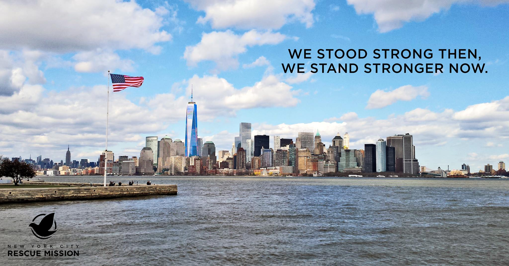

Meals. Our kitchen and dining room is staffed by professional chefs—assisted by clients and volunteers. For many, a meal is the first step towards restoring hope in their lives. Once a month, we also provide staple food from our food pantry to families struggling to make ends meet. On average, we provide over 400 meals a day for those who come to the Mission.


Shelter. At full capacity, we sleep approximately 160 men and 30 women in dormitories on three separate floors of our building. Before resting comfortably in bed for the night, each guest is served a delicious dinner, a hot shower and the opportunity to participate in a gospel chapel service.
We partner with a nearby primary care medical clinic, with services available every day of the week. Residents can receive physicals and ongoing preventative well-care. On Tuesday afternoons at the Mission, outreach workers and case managers help link qualified guests with medical insurance and other food assistance entitlements, to assist in alleviating hunger and homelessness.
An integral part of the Recovery Program, the Career & Learning Center (CLC) affords men the chance to advance their educational. During their 10 hours per week in the CLC, residents improve reading, writing, math, typing, software and other skills, as well as pursue certifications. For those in need of a high school diploma, our tutors assist in TASC (formerly GED) preparation.
We collect, organize and give away various items of men’s and women’s clothing to our guests, referrals and anyone who comes in need. Donations—in new or good condition—are always needed. For more information on donating material gifts and the items we are able to receive, please email us at donategoods@nycrescue.org.
This 9-to-12 month inpatient recovery program incorporates work therapy, relapse prevention, job readiness, life skills, nutrition, anger management, physical fitness, step groups, individual counseling, Bible study and case management to empower men to overcome substance abuse and other life-controlling and debilitating issues.